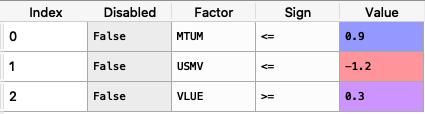
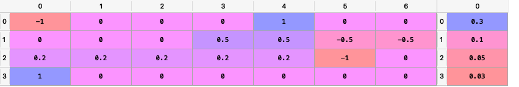

Constraints Functions¶
This module have functions that help us to create any kind of linear constraint related to the assets or assets class weights or related to the value of the sensitivity of the portfolio to a specific risk factor. These functions transform all constraint to the form \(Aw \geq B\).
Also this module have a function that help us to create relative and absolute views for the Black Litterman model. This views can consider relationships among assets and asset classes. This function transform all views to the form \(Pw = Q\).
Module Functions¶
-
ConstraintsFunctions.assets_constraints(constraints, asset_classes)[source]¶ Create the linear constraints matrixes A and B of the constraint \(Aw \geq B\).
- Parameters
constraints (DataFrame of shape (n_constraints, n_fields)) –
Constraints matrix, where n_constraints is the number of constraints and n_fields is the number of fields of constraints matrix, the fields are:
Disabled: (bool) indicates if the constraint is enable.
Type: (str) can be: ‘Assets’, ‘Classes’, ‘All Assets’ and ‘Each asset in a class’.
Set: (str) if Type is ‘Classes’ or ‘Each asset in a class’ specified the name of the asset’s classes set.
Position: (str) the name of the asset or asset class of the constraint.
Sign: (str) can be ‘>=’ or ‘<=’.
Weight: (scalar) is the maximum or minimum weight of the absolute constraint.
Type Relative: (str) can be: ‘Assets’ or ‘Classes’.
Relative Set: (str) if Type Relative is ‘Classes’ specified the name of the set of asset classes.
Relative: (str) the name of the asset or asset class of the relative constraint.
Factor: (scalar) is the factor of the relative constraint.
asset_classes (DataFrame of shape (n_assets, n_cols)) – Asset’s classes matrix, where n_assets is the number of assets and n_cols is the number of columns of the matrix where the first column is the asset list and the next columns are the different asset’s classes sets.
- Returns
A (nd-matrix) – The matrix A of \(Aw \geq B\).
B (nd-matrix) – The matrix B of \(Aw \geq B\).
- Raises
ValueError when the value cannot be calculated. –
Examples
import riskfolio.ConstraintsFunctions as cf asset_classes = {'Assets': ['FB', 'GOOGL', 'NTFX', 'BAC', 'WFC', 'TLT', 'SHV'], 'Class 1': ['Equity', 'Equity', 'Equity', 'Equity', 'Equity', 'Fixed Income', 'Fixed Income'], 'Class 2': ['Technology', 'Technology', 'Technology', 'Financial', 'Financial', 'Treasury', 'Treasury'],} asset_classes = pd.DataFrame(asset_classes) constraints = {'Disabled': [False, False, False, False, False, False, False], 'Type': ['Classes', 'Classes', 'Assets', 'Assets', 'Classes', 'All Assets', 'Each asset in a class'], 'Set': ['Class 1', 'Class 1', '', '', 'Class 2', '', 'Class 1'], 'Position': ['Equity', 'Fixed Income', 'BAC', 'WFC', 'Financial', '', 'Equity'], 'Sign': ['<=', '<=', '<=', '<=', '>=', '>=', '>='], 'Weight': [0.6, 0.5, 0.1, '', '', 0.02, ''], 'Type Relative': ['', '', '', 'Assets', 'Classes', '', 'Assets'], 'Relative Set': ['', '', '', '', 'Class 1', '', ''], 'Relative': ['', '', '', 'FB', 'Fixed Income', '', 'TLT'], 'Factor': ['', '', '', 1.2, 0.5, '', 0.4]} constraints = pd.DataFrame(constraints)
The constraint looks like this:

It is easier to construct the constraints in excel and then upload to a dataframe.
To create the matrixes A and B we use the following command:
A, B = cf.assets_constraints(constraints, asset_classes)
The matrixes A and B looks like this (all constraints were converted to a linear constraint):

-
ConstraintsFunctions.factors_constraints(constraints, loadings)[source]¶ Create the factors constraints matrixes C and D of the constraint \(Cw \geq D\).
- Parameters
constraints (DataFrame of shape (n_constraints, n_fields)) –
Constraints matrix, where n_constraints is the number of constraints and n_fields is the number of fields of constraints matrix, the fields are:
Disabled: (bool) indicates if the constraint is enable.
Factor: (str) the name of the factor of the constraint.
Sign: (str) can be ‘>=’ or ‘<=’.
Value: (scalar) is the maximum or minimum value of the factor.
loadings (DataFrame of shape (n_assets, n_features)) – The loadings matrix.
- Returns
C (nd-matrix) – The matrix C of \(Cw \geq D\).
D (nd-matrix) – The matrix D of \(Cw \geq D\).
- Raises
ValueError when the value cannot be calculated. –
Examples
loadings = {'const': [0.0004, 0.0002, 0.0000, 0.0006, 0.0001, 0.0003, -0.0003], 'MTUM': [0.1916, 1.0061, 0.8695, 1.9996, 0.0000, 0.0000, 0.0000], 'QUAL': [0.0000, 2.0129, 1.4301, 0.0000, 0.0000, 0.0000, 0.0000], 'SIZE': [0.0000, 0.0000, 0.0000, 0.4717, 0.0000, -0.1857, 0.0000], 'USMV': [-0.7838, -1.6439, -1.0176, -1.4407, 0.0055, 0.5781, 0.0000], 'VLUE': [1.4772, -0.7590, -0.4090, 0.0000, -0.0054, -0.4844, 0.9435]} loadings = pd.DataFrame(loadings) constraints = {'Disabled': [False, False, False], 'Factor': ['MTUM', 'USMV', 'VLUE'], 'Sign': ['<=', '<=', '>='], 'Value': [0.9, -1.2, 0.3],} constraints = pd.DataFrame(constraints)
The constraint looks like this:
It is easier to construct the constraints in excel and then upload to a dataframe.
To create the matrixes C and D we use the following command:
C, D = cf.factors_constraints(constraints, loadings)
The matrixes C and D looks like this (all constraints were converted to a linear constraint):

-
ConstraintsFunctions.assets_views(views, asset_classes)[source]¶ Create the assets views matrixes P and Q of the views \(Pw = Q\).
- Parameters
views (DataFrame of shape (n_views, n_fields)) –
Constraints matrix, where n_views is the number of views and n_fields is the number of fields of views matrix, the fields are:
Disabled: (bool) indicates if the constraint is enable.
Type: (str) can be: ‘Assets’ or ‘Classes’.
Set: (str) if Type is ‘Classes’ specified the name of the set of asset classes.
Position: (str) the name of the asset or asset class of the view.
Sign: (str) can be ‘>=’ or ‘<=’.
Return: (scalar) is the return of the view.
Type Relative: (str) can be: ‘Assets’ or ‘Classes’.
Relative Set: (str) if Type Relative is ‘Classes’ specified the name of the set of asset classes.
Relative: (str) the name of the asset or asset class of the relative view.
asset_classes (DataFrame of shape (n_assets, n_cols)) – Asset’s classes matrix, where n_assets is the number of assets and n_cols is the number of columns of the matrix where the first column is the asset list and the next columns are the different asset’s classes sets.
- Returns
P (nd-matrix) – The matrix P that shows the relation among assets in each view.
Q (nd-matrix) – The matrix Q that shows the expected return of each view.
- Raises
ValueError when the value cannot be calculated. –
Examples
asset_classes = {'Assets': ['FB', 'GOOGL', 'NTFX', 'BAC', 'WFC', 'TLT', 'SHV'], 'Class 1': ['Equity', 'Equity', 'Equity', 'Equity', 'Equity', 'Fixed Income', 'Fixed Income'], 'Class 2': ['Technology', 'Technology', 'Technology', 'Financial', 'Financial', 'Treasury', 'Treasury'],} asset_classes = pd.DataFrame(asset_classes) views = {'Disabled': [False, False, False, False], 'Type': ['Assets', 'Classes', 'Classes', 'Assets'], 'Set': ['', 'Class 2','Class 1', ''], 'Position': ['WFC', 'Financial', 'Equity', 'FB'], 'Sign': ['<=', '>=', '>=', '>='], 'Return': [ 0.3, 0.1, 0.05, 0.03 ], 'Type Relative': [ 'Assets', 'Classes', 'Assets', ''], 'Relative Set': [ '', 'Class 1', '', ''], 'Relative': ['FB', 'Fixed Income', 'TLT', '']} views = pd.DataFrame(views)
The constraint looks like this:

It is easier to construct the constraints in excel and then upload to a dataframe.
To create the matrixes P and Q we use the following command:
P, Q = cf.assets_views(views, asset_classes)
The matrixes P and Q looks like this:
